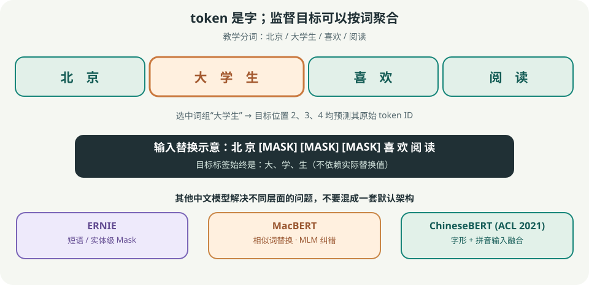

1. 中文不像英语：空格不能直接告诉我们词在哪里
中文的许多文字串可以被多个合理的词组边界解释。比如“研究生命”既可能切成“研究 / 生命”，也可能在特定语境下被解释为“研究生 / 命”。如果一个预训练数据生成器需要“整词”遮盖，它必须决定哪几个汉字算一个词；这个决定来自分词器/词边界算法，不一定来自 Transformer 本身。
原始 Google BERT-base, Chinese 通常对常用中文字符逐字进行 WordPiece 切分，能够在没有空格的中文句子中生成 token IDs。但“一个汉字对应一个 token”不能扩展成所有字、数字、英文混合串、罕见字符都如此。Tokenizer 的词表、规范化、繁简体处理与特殊 token 配置，均以实际 checkpoint 为准。
核心混淆是：输入 tokenization 的粒度 与 选择 MLM 监督目标的分组粒度可以不同。WWM 改变后者，不自动重新设计词表或改变 Transformer Encoder 的层结构。
2. 两个映射：字符切分与词边界分组
先固定一个教学句子 北京大学生喜欢阅读。假设 tokenizer 输出 [北,京,大,学,生,喜,欢,阅,读]；这是为简化问题手写的 token 列表，不声称和任意 checkpoint 的真实 IDs 完全相同。再假设中文分词结果是 北京 / 大学生 / 喜欢 / 阅读。词边界为字符/token 索引打上 group IDs：[0,0,1,1,1,2,2,3,3]。
如果抽中词组“大学生”，目标位置是三个 token 对应的索引，而非只抽中“学”这一个字。输入替换可以是 [MASK]、随机 token 或保持原 token；损失目标始终对应被选中的原始 token。即使在选中位置保持原字不变，也仍对该位置计算 MLM 损失。

3. WWM 做的事：选词组，再落实到 token 位置
在普通 token-level MLM 中，假设预训练选择率约 15%，可能只选中 大 或 学 这一个字；上下文还保留同一个词的其他字符，使预测比较容易。Whole Word Masking（WWM）则先选中词组，把它覆盖的所有 WordPiece token 加入目标集合。模型需要利用词外上下文重建这些 token，而不是凭未遮盖的同词字符猜缺字。
这不是简单地“15% 的词随机全遮盖”就完事：实现往往要控制最终目标 token 的预算（例如尽量接近总有效 token 的 15%），因此选中词组的数目和大小会影响目标 token 数。某个长词被选中时可能填满剩余预算，实际选取规则会随数据生成实现变化。还需排除 [CLS]、[SEP]、[PAD] 等特殊位置，并正确处理子词与原始字符 span 的映射。
哈工大讯飞联合实验室发布的 Chinese-BERT-wwm 通过中文分词工具确定完整词组，再把组内汉字共同选为目标。其官方说明明确：WWM 中的“mask”是广义的监督目标位置选择，并不保证输入一定替换为字面 [MASK]。这使它与 80/10/10 等替换机制在概念上兼容。
4. 监督仍是原 token 的词表交叉熵
设原始 token IDs 为 x₁,…,x_T，被选中组展开后的 token 索引集合为 M，经过替换的输入为 x̃。Encoder 为每个目标位置输出词表分布，训练时只在选中的有效 token 上统计原 ID 的对数似然：
这是把所选 token 损失取平均的常见教学形式，不要求整词只有一个分类标签；每个被选中的原始 token 仍各自预测词表 ID。不同代码库可能先对 token 数或 batch 元素数做不同归一化，需要检查实际实现。分词器在这里决定集合 M，却不会凭空把词级词表输出头替换成一个“多字词分类器”。
如果采用原始 BERT 的替换配方，则在已选中目标 token 中，约 80% 换为 [MASK]、10% 换随机 ID、10% 不变。这些比例的分母是已选中目标位置，不是整个序列。MacBERT 的类似比例对应的是近义替换、随机替换、保留原词（不是默认 80% 放 [MASK]），两种配方不可混写。
5. 四条路线，解决的是四个不同问题
| 路线 | 主要变化 | 不是在做什么 |
|---|---|---|
| Chinese BERT（原始） | 中文 WordPiece 与双向 Encoder 的常规 MLM | 不自动具备外部中文词边界 WWM |
| BERT-wwm（HFL） | 按外部分词得到的整词选择 MLM 目标位置 | 不必修改 Encoder 结构或词表粒度 |
| ERNIE（百度 2019） | 短语级、实体级知识相关遮盖，扩大语义单位 | 不是所有名为 ERNIE 的模型都采用同一版本目标 |
| MacBERT（HFL） | MLM as correction：用相似词/随机词进行受损输入纠错 | 不是把训练任务改成自回归文本生成 |
| ChineseBERT（ACL 2021） | 融合字形与拼音相关的汉字特征 | 不是“所有中文 BERT 模型”的泛称 |
这些路线并不完全相互排斥：WWM 可以与不同的内容替换策略配合，也能和别的预训练配方共同出现。但要准确比较实验，应该把目标位置选择、替换内容、编码架构、输入特征四个维度分别列出。
ERNIE 的名称也有歧义。本篇引用的是百度 Sun et al. (2019) 的 Enhanced Representation through Knowledge Integration，特别强调 phrase-level 与 entity-level masking；不要把后续不同版本 ERNIE，或其他机构同名模型，混成一个统一架构。
6. ChineseBERT 为什么单独使用字形与拼音
常规 token embedding 以离散 ID 表示字符，单靠 ID 无法直接表达汉字部件、字形相似性或读音。ACL 2021 的 ChineseBERT 从另一个入口增强中文预训练：用多字体汉字图像相关的 glyph 信息与拼音信息构造额外特征，并与字符 embedding 融合后送入语言模型。它不仅改变“哪些位置被遮盖”，也改变模型看到的输入表示。
汉字具有多音字：比如“重”在“重庆”和“重要”中的读音不同。拼音特征是否依赖上下文消歧、如何映射到向量，都需要查具体 ChineseBERT 的数据处理与实现，不能把“中文有拼音”理解为直接附加无上下文的一个字符串编码就能解决歧义。
同名混用风险很高：原始 bert-base-chinese、HFL 的 chinese-bert-wwm、chinese-macbert-base、ACL 2021 的 ChineseBERT 是不同 checkpoint 或结构/预训练配方。即使架构接近，也必须配套 tokenizer、规范化、词表 IDs、模型配置与权重；不能单凭名字任意混搭。
7. 训练与评估前的中文工程清单
在构造 WWM 标签前，要保存原文字符 offsets、分词边界、tokenizer 的 subtoken offsets 与每个 subtoken 对应的 word/group ID。检查一对多映射与特殊 token，避免把 [SEP] 当作词的一部分。将目标 token 的原 ID 写入 label，未选位置设忽略值（常见 -100）；如果替换为随机 token，也不能把替换后的 ID 当作答案。
分词误差会改变 WWM 的选中组；专业领域的“高压锅”“量子态”等词，可能被工具切成意外边界。需要按领域抽样审查分词 group 与 MLM label 的一致性，且分别报告语言数据、语料去重/繁简处理、模型输入长度、任务分数和硬件成本。
下游中文 NER 仍要解决字/词 span 与模型 token 标签的对齐问题；预训练 WWM 分组并不自动替代 NER 的 BIO 标签对齐。对于繁简混杂、异体字、表情符号、英文和数字混排，需要显式测试 unknown token 与 offsets。
8. 交互实验：同一段文本，词边界一变，Mask 目标就不同
固定汉字序列：研究生命
展示不同外部分词输出对目标集合的影响。为了突出机制，所有字都假设是独立 token；选中的是教学指定的一个词组，并未随机采样。
原 token：[研, 究, 生, 命] 逐字 MLM：只选第 1 个 token“研”作为目标。 输入示意：[MASK] 究 生 命；监督标签只包括原字“研”。 同词剩余字符可能保持可见，和整词遮盖不同。
9. 哪些改进不能不加条件地宣传
WWM 不保证对所有任务提升。命名实体、语法纠错、阅读理解等任务对字符局部信息的需求可能不同；分词器质量、预训练语料与超参数也会影响比较。研究 Is Whole Word Masking Always Better for Chinese BERT? 特别提醒其任务依赖性。
另外，ChineseBERT 的 glyph/pinyin 融合与 HFL BERT-wwm 的 WWM 不是同一个工作；一个模型表现更好也不能直接证明单一结构改动带来全部增益。严谨实验需要保持训练 token 数、参数量、语料、下游数据划分与随机种子尽量可比，并明确每个 checkpoint 使用的资源。
关键结论
- 中文 WordPiece 可能逐字输出 token，但 WWM 通过外部中文分词把多个 token 作为一个预测组；损失仍按目标 token ID 计算。
- 选中目标位置、输入替换值和损失标签是三件不同的事；MacBERT 的 80/10/10 不能误写成原始 BERT 的 [MASK]/随机/原词规则。
- 百度 ERNIE 强调短语/实体级掩码；ACL 2021 ChineseBERT 强调字形/拼音输入增强。模型名字和 tokenizer/权重必须成对核对。
原始论文与官方资料
- Cui et al., Pre-Training with Whole Word Masking for Chinese BERT 与 官方 Chinese-BERT-wwm README（分词工具、目标分组与广义 mask）。
- Cui et al., Revisiting Pre-Trained Models for Chinese NLP / MacBERT 与 MacBERT 官方代码（MLM as correction）。
- Sun et al., ERNIE: Enhanced Representation through Knowledge Integration（phrase/entity masking）。
- Sun et al., ChineseBERT: Chinese Pretraining Enhanced by Glyph and Pinyin Information，ACL 2021。
- Google Research, BERT 多语言/中文字符切分说明；中文 WWM 任务依赖性研究。